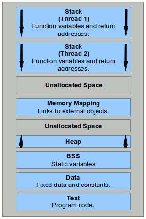

When it comes to detecting, capturing and analysing malware, the hard drive isn’t so important unless we’re establishing a timeline for how it got there. The kernel and anything that’s running on a system lives in memory, plus it’s where the unencrypted/unobfuscated malware payloads are. System memory is also the one place we’re likely to find cryptographic keys, if we’re really desperate and know roughly where to look.
Where to begin? As with Windows processes, the processes in UNIX-based systems are contiguous data structures, containers created by the kernel for running programs. They contain everything a program might need, including an image of the executable, links to external .so objects (roughly analogous to Windows DLLs), variables, runtime data, etc. A process has a definite logical structure, although that’s not immediately apparent outside textbooks.
The most lucid representations I could find were by Gustavo Duarte and a Lawrence Livermore National Laboratory tutorial, which I’ve merged for clarity:

Of course, the stack is also in there, where variables passed to whatever functions and return addresses are found. According to the LLNL tutorial, threads are written to and from the stack.
procfs
This is important, because system monitoring tools will almost always get their information from something called
procfs. Practically everything in a UNIX system is represented by a file – sometimes files are created as interfaces or pointers to something physical. From the user perspective procfs is the
/proc directory, which contains a number of virtual directories and files (existing entirely in system memory) representing low-level stuff such as processes, memory allocations and hardware components. Most the
procfs files can be accessed directly.
The common way to find what’s running on a machine is the ‘
top‘ command, but it’s only going to show processes that are active or being awakened, and not suspended/dormant processes. This is where ‘
ps‘ command becomes a handy alternative:
#ps -el
Lists all processes resident in memory:
ps-el
But, as Prof. Andrew Blyth would say, ‘user-space is a lie’, meaning the user-space programs can only report what kernel-space tells it. The implication is that a kernel-mode rootkit can hide information about processes and network activity from user-space, and Android OS is a total bitch for doing precisely that (unless the device is rooted).
With typical Linux desktops and servers, there are various ways around this. One of them is using unhide to catch discrepencies between CPU, memory usage and what
/bin (or
/sbin) executables report, and another method compares system calls with a fixed system call map.
Back to the list of processes: Having got the PIDs for active and dormant processes, and having found which programs they might belong to, a considerable amount about a given process can be learned by reading from
/proc.
The directories of interest are listed to the left, when using the ‘
ls‘ command. The directory names are the PIDs for processes resident in memory, and each contains a number of virtual files.
To get a rough picture of what the process contains, pmap is worth trying:
#pmap 2586
This appears to do pretty much the same thing as:
#cat maps
Of course, the contents can be dumped to a text file with
#cat maps >> dumpfile.txt
Two values that might be important, which tell us the start and end addresses for the memory allocated to a process:
- vm_start – First address within virtual memory.
- vm_end – First address outside virtual memory.
Other files of interest include:
- /proc/[PID]/exe: Contains symbolic links to the executable binary file.
- /proc/[PID]/limits: Resource limits assigned to the process.
- /proc/[PID]/maps: A memory map of the process.
- /proc/[PID]/sched: Thread scheduling stats for the threads generated by the process.
A couple of other tools
Another useful utility is pstree, which shows whether a PID has any parent or child processes. The strace utility will output the system calls made by a process. For example, if Firefox has a PID of 2990:
#strace -p 2990
Viewing process memory and the stack
It took some research to find something that enabled me to view the raw contents of a process’ memory space. Eventually I decided on scanmem, a little utility that lists memory sections/segments and dumps them to a file for later analysis.
The first thing to do is point scanmem at the right PID (Firefox has a PID of 2990 here):
0> pid 2990
The ‘lregions‘ command will give a list of sections/segments found, along with the stack address and size. For example, it could show the address as 0xbfba6000, and a length of 180224 bytes. Dumping this should produce an 180KB file, basically. Remember, the stack size of a relatively dynamic program could change while being dumped, so this only gives a snapshot:
0> dump 0xbfba6000 180224 /home/michael/scanmem-stack-dump
The dump file is quite readable in a hex editor, but the Bokken reverse engineering tool gives better results (when it doesn’t crash). Notice that bit where it says ‘Write a comment‘ at address 0x8a30: I was logged into FaceBook, and the ‘Comment’/’Like’ input fields got pushed onto the stack when I switched to another browser tab.
Further up the stack, at 0x28ce4, some global variables or parameters are found, including the user name, the hostname, the PID of a crypto provider, session cookies, important filesystem locations, etc. I honestly didn’t expect to find that in the stack, but there it is.
The Kernel
More than the huge chunk of monolithic code, I’m referring to kernel-space, which is the physical memory allocated to the kernel. Generally off limits to users, interaction between user and kernel space is through system calls. When the user double-clicks on that Firefox icon or runs a shell command, the kernel allocates a block of memory for the process, responds to system calls from that process, and manages the execution of that process’ threads on the processor. The kernel also has an interface in procfs.
It’s possible to use ‘cat kcore‘, but that would screw up the terminal session after pressing Ctrl+C, probably because it’s overflowed a buffer related to stdout(). A better way is to use:
#strings -n 10 kcore
Some users with Clam AV installed might be surprised when the output produces a list of (Windows) Trojans. Relax – they don’t actually exist. What I think is happening is bytes are continually passing through system memory, and just like that monkeys with a typewriter thing, kcore will inevitably dump erroneous byte patterns associated with known malware. For this reason, anti-malware programs should never scan kcore.
References